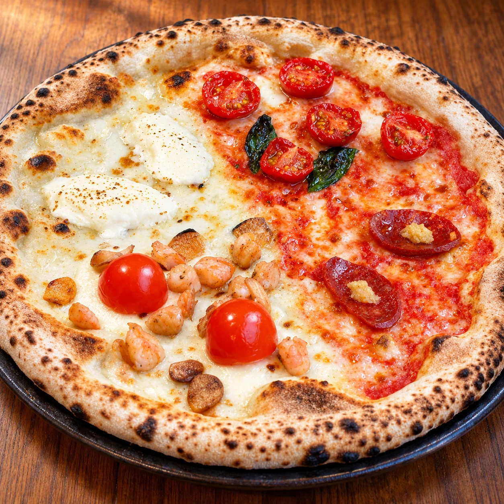
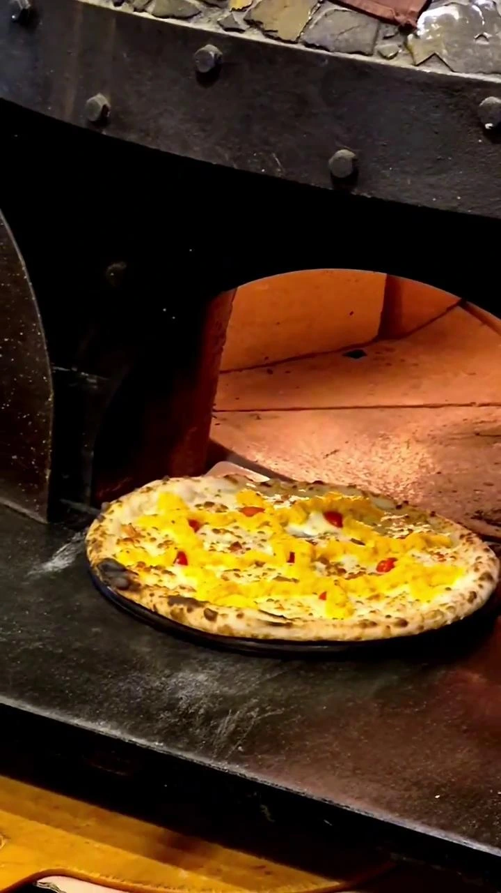
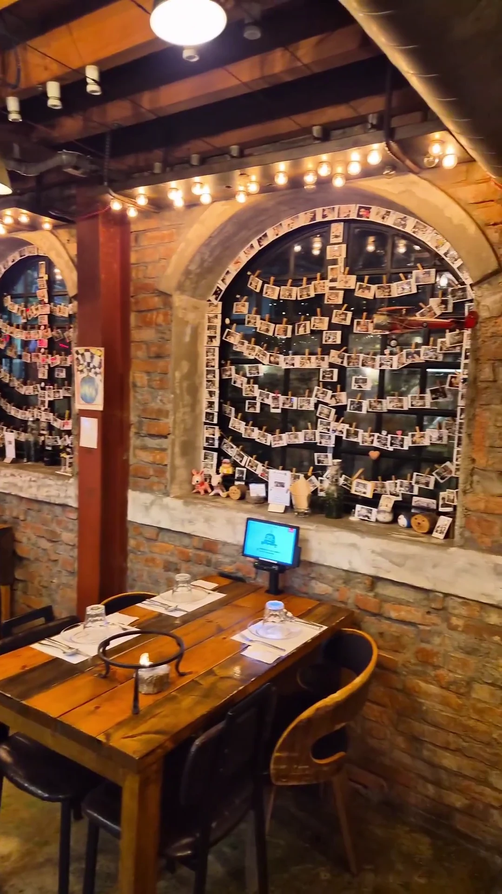
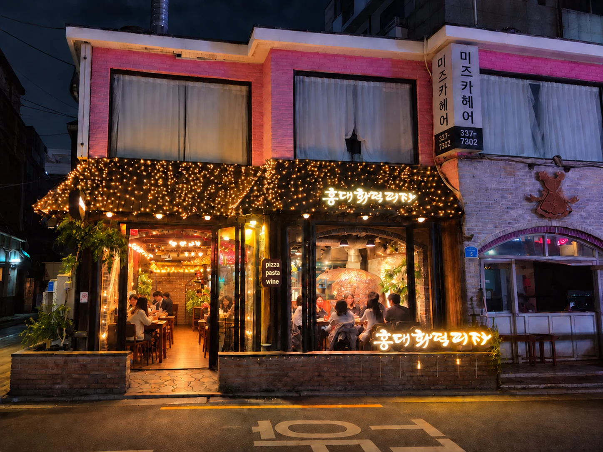

2012년부터, 홍대 · 합정 · 상수
치즈는 쭈우욱,
도우는 쪼온득.
홍대·합정·상수에서 화덕피자와 파스타를 즐기는 홍대화덕피자입니다.
네 가지 맛을 담은 피자부터
새우 크림 위에 치즈를 녹인 파스타까지.
치즈가 주인공인 메뉴로 채웠습니다.
네이버 예약 고객에게는 예약 쿠폰 혜택을 드려요.
맛집 가이드블루리본 서베이 2027 선정
함께한 손님들네이버 리뷰 3,300건 이상
02 / REGULARS
한 번 온 분이,
또 옵니다.
오래 찾아주신 단골들이 먼저 알고 있던 맛.
처음 도전한 블루리본 서베이 2027에 선정되어,
이제는 더 많은 분께 알릴 수 있게 되었습니다.
2012
2012년부터 15년째, 한 자리
홍대·합정·상수에서 화덕피자를 구워 왔습니다.
3,300+
네이버 리뷰 3,300건 이상
함께한 식사, 다시 찾아주신 마음이 쌓였습니다.
2027
블루리본 서베이 선정
오래 사랑받아 온 식탁의 반가운 소식입니다.

03 / THE OVEN
이탈리아 베수비오
화산석으로 만든 화덕.
홍대화덕피자의 화덕은 이탈리아 베수비오 화산석으로 만들었습니다. 열을 오래 머금는 화산석의 성질로 높은 온도에서 피자를 빠르게 구워냅니다.
72시간 숙성한 도우, 매장에서 직접 끓인 소스.
한 판의 기본부터 정성스럽게 준비합니다.

04 / OUR TABLE
데이트도,
가족 외식도.
데이트와 소개팅으로 둘이서, 가족 외식 모임으로 함께.
화덕피자와 파스타를 나누는 식탁입니다.
- 데이트·소개팅
- 반반 피자와 파스타를 둘이 나누는 식탁. 데이트 메뉴와 공간 보기 ↗
- 친구 모임
- 취향이 다른 메뉴도 한상에, 여럿이 함께하는 시간.
- 가족 외식 모임
- 가족이 함께 화덕피자와 파스타를 나누며 즐기는 한 끼. 가족 외식 안내 보기 ↗

05 / RESERVATION
네이버로 예약하고,
함께할 식탁을 정해보세요.
다음 만남은 홍대화덕피자에서.
네이버 예약하기 ↗지금 받을 수 있는 쿠폰과 예약 가능 날짜·인원은 네이버 예약에서 확인해 주세요.06 / FIND US
합정역·상수역 도보 5분,
홍대입구역 도보 15분.
홍대·합정·상수 사이, 함께 먹으러 오세요.
홍대화덕피자
서울 마포구 독막로7길 5, 1층
- 가까운 역
- 합정역·상수역에서 도보 약 5분
홍대입구역에서 도보 약 15분 - 영업시간
- 11:30–22:00 · 라스트오더 21:30
월·수·목·금 브레이크타임 15:30–16:30
매주 화요일 휴무 - 전화
- 0507-1349-2285
07 / STORIES
홍대화덕피자 이야기
메뉴와 방문, 예약에 대해 자주 묻는 내용을 글로 정리해 두었습니다.
 방문·예약
방문·예약홍대·합정·상수 크리스마스 데이트, 피자와 파스타로 준비하는 저녁
크리스마스 데이트 식사를 준비한다면 메뉴 취향, 실제 매장 사진, 역에서 오는 길과 원하는 날짜의 예약 가능 여부를 차례로 살펴보세요.
 방문·예약
방문·예약홍대·합정·상수 가족 외식 모임, 피자와 파스타 고르는 법
가족이 나눌 피자와 취향별 파스타, 아이가 먹을 메뉴의 확인 사항과 유아의자·방문 준비를 안내합니다.
 방문·예약
방문·예약합정·상수 데이트 식당, 화덕피자와 파스타로 고르는 둘의 저녁
합정·상수에서 데이트할 양식집을 찾는다면 실제 공간 사진, 둘이 나눌 메뉴, 역별 이동과 예약 방법을 함께 살펴보세요.